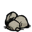
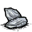

| Mosaic | |
| Abundant |   |
| Occasional | |
| Rare | |
| “ | That looks out-of-place. | ” |
| –Maxwell | ||
Mosaic "biomes" are typically restricted to one per map (though they also tend to be rather large), and contain a random patchwork of all other biomes within them. A signature of the Mosaic biome is the presence of lakes (several small holes of ocean), identical to the edges of islands, in the appearance of a circular shape or other obscure polygon.
Naturally spawned Rocks and Flint can be found lying on the ground in mosaic biomes and one of the place to find Plugged Sinkhole. Mosaic is also the only place in which Graveyards and Cobblestone can be found, aside from the Metal Potato Thing Set Piece, it is recommended to collect these turfs to pave a home base with, because of the 25% speed boost.
Mosaic biomes would make excellent homes, if not for the uncommonness of signature biome benefits, such as Tallbirds and Beefalo, due to the considerably small area of each biome region.
Mosaic biomes main turf is Forest Turf with some small patches of Marsh Turf, Rocky Turf and Turfless ground that are spread in the entire biome.
")
| Biomes | |
| Surface | Chess • Grasslands • Graveyard • Forest • Marsh • Mosaic • Ocean • Rockyland • Savanna • Desert • Deciduous Forest |
| Caves | Mushtree Forest • Rocky Plains • Stalagmite Biomes • Sunken Forest • Cave Swamps |
| Ruins | Abyss • Labyrinth • Military • Sacred • Village • Wilds |
| Related | Bridges • Map • Road (Trail) • Turfs |
{kind=link}
{kind=link}
{kind=link}